Инструкция
Аппаратный журнал радиосвязей (QSO), который находит каждый позывной, пока вы его набираете, — имя, страну, город, локатор, RDA — и показывает, как далеко станция, какая там погода и который час. Здесь всё: от первого запуска до последней горячей клавиши.
English version1. Первые шаги
Установка
Программа называется R2FEL HamLog — так написано в её окне и так она называется в этой инструкции; значок, установщик и папки на диске — R2FEL-LOG.
- Откройте файл
R2FEL-LOG-….dmg. - В появившемся окне перетащите R2FEL-LOG на папку Программы (Applications).
- Запустите программу из Launchpad или из папки «Программы».
-
Запустите установщик:
R2FEL-LOG-Setup-….exeдля Windows 10 и 11 (64-битных);R2FEL-LOG-Setup-…-Windows7-8.exeдля Windows 7, 8 и 8.1, а также для любой 32-битной Windows, в том числе 10. - Пройдите шаги установщика — можно выбрать папку, а можно просто нажимать Далее и Установить.
- Запустите R2FEL-LOG ярлыком на рабочем столе или из меню «Пуск».
Установщик не подписан платным сертификатом, поэтому Windows может показать «Система Windows защитила ваш компьютер». Нажмите Подробнее, затем Выполнить в любом случае. Антивирус тоже может один раз переспросить.
Программа не подписана платным сертификатом Apple, поэтому при первом запуске macOS может написать, что не может проверить её на вредоносное ПО. Нажмите Готово, откройте Системные настройки → Конфиденциальность и безопасность, пролистайте вниз до сообщения о R2FEL-LOG и нажмите Всё равно открыть. Дальше программа открывается как обычно.
Первый запуск
- Настройки откроются сразу на странице «Логины QRZ и HamQTH». Это необязательно: с логинами имя, город и локатор подставляются сами, пока вы записываете связь, а без них журнал работает полностью — просто эти данные вы вписываете сами. Можно заполнить любые справочники или ни одного и закрыть страницу крестиком: вернуться к ней всегда можно в настройках ⚙. Больше сама она не откроется.
- Заполните верхнюю строку — MY CALLSIGN, MY RDA и MY QTH LOCATOR. Кнопка 📍 сама определит локатор и RDA по вашему местоположению (см. раздел 4). Эти поля запоминаются — менять их нужно, только если вы работаете из другого места.
- Выберите диапазон и вид излучения в строке MAIN STATION. Они тоже запоминаются.
Всё — можно работать.
Окно можно растягивать за края и разворачивать во весь экран — кнопкой в его заголовке или клавишей F11зелёной кнопкой в его углу или клавишами ⌃⌘F. В узком окне форма сама перестраивается. Размер окна запоминается.
Всё время в журнале — UTC, как принято в радиолюбительских журналах. Журнал хранится на этом компьютере, внутри программы, — наружу уходит только позывной, который ищется в базе.
2. Экран программы
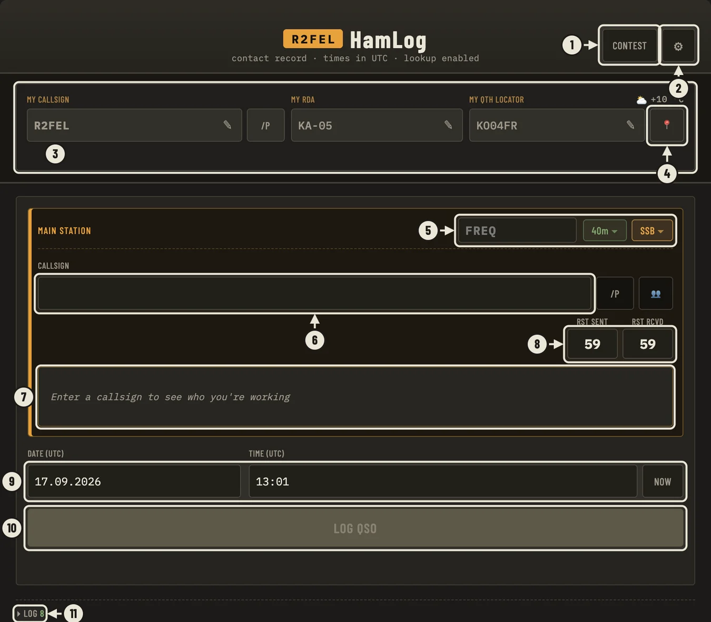
- CONTEST — режим контеста: контрольные номера вместо записи группы (раздел 7).
- ⚙ Настройки — логин QRZ, импорт и экспорт, алфавит и язык, эта инструкция.
- Ваша станция — ваш позывной, район RDA и локатор, а рядом погода у вас.
- 📍 — определяет ваш локатор и RDA по текущему местоположению.
- Частота, диапазон, вид излучения связи. Диапазон сам следует за частотой.
- CALLSIGN — позывной корреспондента. Всё начинается отсюда.
- С кем связь: имя, город, страна, расстояние, погода, местное время и была ли уже с ним связь.
- RST SENT / RCVD — рапорты: ваш ему и его вам.
- DATE / TIME (UTC) — идут сами по часам; NOW возвращает их к текущему времени.
- LOG QSO — записать связь. То же самое делает Enter.
- ▸ LOG — открыть журнал; рядом — сколько в нём связей.
3. Как записать связь
Всю связь можно провести, не отрывая рук от клавиатуры:
- Наберите позывной. Прямо под полем он расписывается по буквам — сразу читать в эфир.
- Через мгновение: кто это, откуда, как далеко, какая у него погода и который час.
- Tab — ваш рапорт (просто наберите поверх 59), Tab — его рапорт.
- Enter — связь записана.
- Форма чиста для следующей связи; частота, диапазон и вид излучения остаются.
Позывной
-
Буквы сами становятся заглавными, а раскладка клавиатуры не важна:
если набрать с включённой русской раскладкой
к2ауд, получитсяR2FEL— каждая клавиша даёт свою латинскую букву. -
Под полем позывной расписывается по буквам (Romeo Two
Foxtrot…), а для станций России, Беларуси и Казахстана при включённом
русском режиме — по-русски. Окончание читается отдельно,
а привычные — словом:
R2FEL/P→ «… Леонид / дробь поле»,R2FEL/M→ «… Леонид / дробь машина»,R2FEL/QRP/P→ «… Леонид / дробь QRP / дробь поле» (по-английски — “stroke QRP / stroke portable”). - Поиск начинается сам, как только вы перестали печатать (и ещё раз — когда уходите из поля). Строка под расшифровкой говорит, чем кончилось: ✓ found [qrz.ru] — найден, not found — не найден, или что пошло не так.
- ✕ в правом конце поля стирает позывной и всё, что по нему найдено. То же делает Esc.
-
/P добавляет к позывному
/P(работа в поле) или убирает его. Задержите на кнопке курсор — выпадет список остальных окончаний:/QRP(малая мощность),/M(из машины),/MM(с судна),/AM(с борта самолёта). Выбранное окончание остаётся на кнопке, и следующей станции его можно поставить одним нажатием.
С кем связь
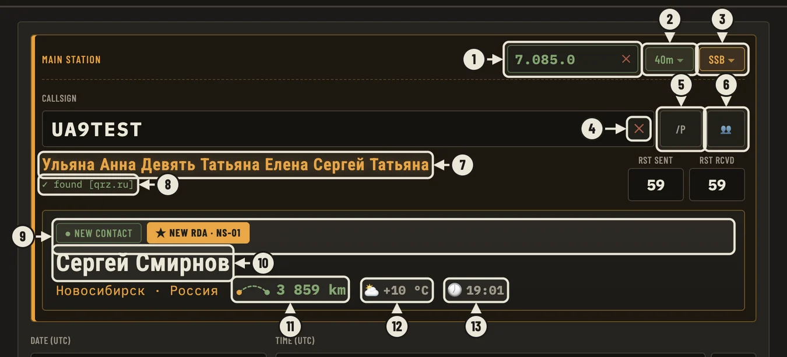
- Частота в килогерцах. Вводите как удобно —
7085,7.085,7,085— при выходе из поля станет7.085.0. ✕ стирает её. - Диапазон. Ставится сам по частоте; без частоты выберите его здесь.
- Вид излучения: SSB, CW, AM, FM, DMR, D-STAR, C4FM, DIGITAL.
- ✕ — стереть позывной (или Esc).
- /P — добавить или убрать /P; с задержкой курсора — список остальных окончаний.
- 👥 — начать группу: ещё одна станция из того же пайлапа (раздел 6).
- Позывной по буквам — сразу читать в эфир.
- Результат поиска и откуда он: сначала QRZ.RU, а если там станции нет — QRZ.com.
- NEW CONTACT — новая станция, или WORKED BEFORE, если она уже есть в журнале (раздел 5). Рядом может загореться янтарная отметка — то, чего у вас ещё не было:
- ★ NEW COUNTRY — этой страны в журнале нет вообще ни одной связи;
- ★ NEW RDA · SP-03 — этого района RDA у вас ещё не было (страна при этом может быть давно знакомой — для российского журнала это самая частая из трёх);
- ★ NEW BAND · 40m — страна есть, но на этом диапазоне вы её ещё не работали.
- Имя оператора, под ним — город и страна.
- Расстояние от вас до него. Знак «≈» — его локатор приблизительный.
- Погода у него: облачность и температура.
- Его местное время — его показывает и циферблат.
Для расстояния и погоды нужны два локатора: его (из базы) и ваш (MY QTH LOCATOR). Если вашего нет — карточка об этом скажет.
Станции нет в базах
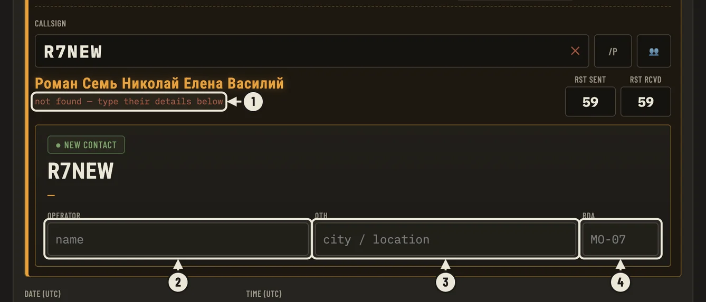
- not found — type their details below: этого позывного нет ни на QRZ.RU, ни на QRZ.com.
- OPERATOR — имя, как его назвали в эфире.
- QTH — город или место. (В русском режиме эти два поля пишутся по-русски — для станции из любой страны.)
- RDA — его район, если назвал. Дефис ставится сам:
MO07→MO-07.
Tab идёт так: позывной → имя → QTH → рапорты — эти поля встают в тот же ритм.
Диапазон и вид излучения

- Диапазоны: 160m, 80m, 40m, 30m, 20m, 17m, 15m, 12m, 10m, 2m, 70cm. Виды излучения: SSB, CW, AM, FM, DMR, D-STAR, C4FM, DIGITAL.
- Цифровые виды в файле ADIF записываются так, как принято:
MODE=DIGITALVOICEиSUBMODE=DMR(илиDSTAR,C4FM) — их поймут LoTW, eQSL и другие журналы;DIGITALуходит какDIGITALVOICEбез уточнения. В своём журнале вид остаётся написанным так, как вы его выбрали. - Частота внутри диапазона всегда главнее:
14195— это 20m, что бы ни было выбрано, и частота становится зелёной. Частота вне любительских диапазонов становится красной и диапазон не меняет. - Смена вида излучения ставит привычный рапорт — 59 для телефона, 599 для телеграфа, — но только если в полях рапортов стоит стандартное значение. Рапорт, который вы вписали сами, не трогается.
- Диапазон, вид излучения и частота переходят от связи к связи и запоминаются при выходе.
Рапорты
RST SENT — рапорт, который даёте вы, RST RCVD — который дают вам. Tab из позывного попадает в них с уже выделенным значением — просто печатайте новое поверх. На последнем рапорте Tab останавливается и не убегает в остальные части окна.
В рапорты вводятся только цифры, и столько, сколько положено для вида связи: три
(599) для CW, две (59) для всех остальных. Буквы и прочие знаки
просто не вводятся; при переходе с CW на телефон 579 становится 57.
Дата и время
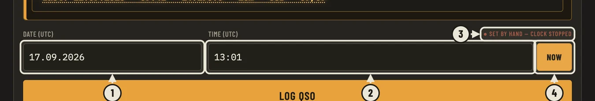
- DATE (UTC) — дата.
- TIME (UTC) — время. Оба поля сами идут по часам.
- Как только вы что-то впечатали в одно из них, часы для этой связи останавливаются, о чём и сказано: SET BY HAND — CLOCK STOPPED («введено вручную — часы стоят»). Так записывают связь задним числом.
- NOW (подсвечивается, пока часы стоят) возвращает текущее время.
В эти поля вводятся только цифры — ничего другого набрать нельзя. В русском
режиме дата и время всегда показываются как 14.09.2026 и
17:25 — в 24-часовом формате, как бы ни был настроен компьютер.
Набирайте одни цифры, точки и двоеточие встанут сами: 14092026 →
14.09.2026, 1825 → 18:25. Цифра, которой там
быть не может (13-й месяц, 25-й час), просто не вводится; первая цифра, которая
может означать только одно, дополняется сама (925 → 09:25),
а год из двух цифр при выходе из поля становится полным
(01.09.26 → 01.09.2026). В английском режиме формат такой,
как принято на компьютере для вашего региона (например, 09/14/2026 и 05:25 PM).
Сохранение
Enter в позывном или в любом рапорте — или кнопка LOG QSO — записывает связь. Появляется ✓ QSO LOGGED, и форма очищается для следующей связи: позывной, имя и остальное уходят; частота, диапазон, вид излучения и ваша станция остаются, а часы снова идут.
Без трёх вещей связь не запишется: позывной корреспондента, ваш позывной в строке станции и диапазон. Если чего-то не хватает, программа не сохраняет связь, а сама встаёт в нужное поле, обводит его красным и пишет под кнопкой, чего ждёт — например ✗ Выберите диапазон (и сразу открывает список диапазонов). Раньше такая связь молча уходила в журнал без вашего позывного (в журнале у неё серый ?) или без диапазона, а такую связь нельзя отправить ни в LoTW, ни в eQSL, ни в HAMLOG.
4. Ваша станция и 📍
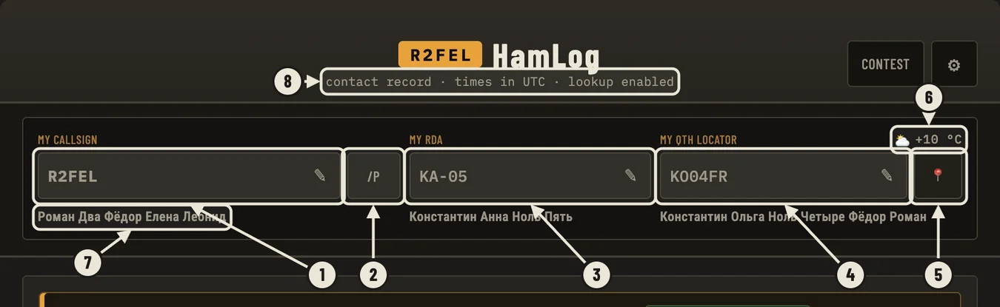
- MY CALLSIGN — ваш позывной, он пишется в каждую связь.
- /P — работа в поле: добавляет или убирает
/Pу вашего позывного. Задержите курсор на кнопке — можно выбрать/QRP,/M,/MMили/AM. - MY RDA — ваш район RDA, например
KA-05. НаберитеKA05— дефис появится сам. - MY QTH LOCATOR — ваш QTH-локатор, например
KO04FR. Всегда заглавными буквами, как ни набирай. - 📍 — заполнить локатор и RDA по тому, где вы сейчас.
- Температура и облачность у вас.
- Ваши позывной, RDA и локатор по буквам — то, что вы читаете корреспонденту. Эти строки появляются, когда в CALLSIGN есть позывной, и идут тем алфавитом, который подходит этой станции.
- Строка под названием говорит, включён ли поиск. Если логин QRZ не задан, там так и написано, а щелчок по ней открывает настройки.
Заполненные поля этой строки серые и не принимают набор. Свой позывной, район и локатор ставятся один раз, а строка находится прямо под рукой — случайная буква меняла позывной, под которым пишутся все связи. Чтобы изменить поле, нажмите ✎ в его конце: оно откроется, а текст выделится целиком. Стоит уйти из поля — оно снова закрыто.
📍 — где я?
- Нажмите 📍. В первый раз macOS спросит: «Программа R2FEL-LOG запрашивает доступ к вашей геопозиции» — нажмите Разрешить.
- Нажмите 📍. Windows ответит по своей настройке «Расположение» (если она выключена — см. ниже).
- Локатор вычисляется сразу, а район RDA через секунду находится по карте RDA.
- Если район не нашёлся автоматически, откроется карта (r1cf.ru/rdaloc), а ваши координаты уже будут скопированы — вставьте их туда и впишите код в MY RDA.
Программа сама откроет Параметры → Конфиденциальность и защита → Расположение. Включите Службы определения местоположения и Разрешить классическим приложениям доступ к местоположению, затем снова нажмите 📍. Без GPS Windows определяет место по Wi-Fi, поэтому локатор может ошибиться на квадрат — проверьте его.
Windows 7 и 8 вообще не сообщают программам местоположение: впишите локатор в MY QTH LOCATOR (и район в MY RDA) вручную.
Второй раз macOS не спрашивает. Нажмите 📍 ещё раз: программа сама откроет Системные настройки → Конфиденциальность и безопасность → Службы геолокации — включите там R2FEL-LOG и снова нажмите 📍. Если службы геолокации выключены для всего Mac, включите их вверху той же страницы.
5. Повторные связи
Как только вы набрали позывной, который уже есть в журнале, программа это покажет — и сама откроет журнал на прошлых связях с ним:
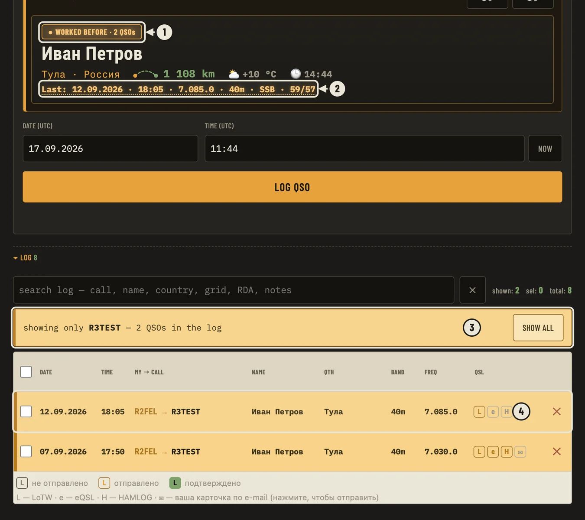
- WORKED BEFORE · 2 QSOs — уже работали, и сколько раз.
- Last: — последняя из этих связей. Щёлкните — откроется полный список. Если та связь была под другим вашим позывным, в конце будет · MY CALL и этот позывной. Прошлые связи ищутся по всему журналу, под какими бы вашими позывными они ни были.
- Журнал показывает только эту станцию. SHOW ALL возвращает весь журнал (прошлые связи остаются подсвеченными), SHOW ONLY THESE — снова только их.
- Прошлые связи, подсвеченные.
Сотрите позывной — журнал свернётся обратно (если открылся сам); запишите связь — он свернётся всегда, чтобы не мешать следующей. У станций группы такая же отметка WORKED BEFORE.
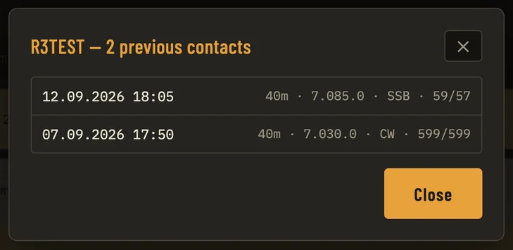
6. Пайлап: несколько станций сразу
Когда отвечают сразу несколько станций — пайлап или круглый стол, — каждую можно записать одним махом:
- Первая станция — в CALLSIGN, как обычно.
- Пробел — рамка становится зелёной группой, основная станция получает номер 1, а ниже открывается станция 2, сразу для следующего позывного. Каждый ищется в базе сам. Ещё Пробел — следующая.
- Добавили лишнюю? Esc в станции группы убирает её.
- Enter записывает всех разом — по связи на каждую станцию, с одной датой, временем, диапазоном и видом излучения.
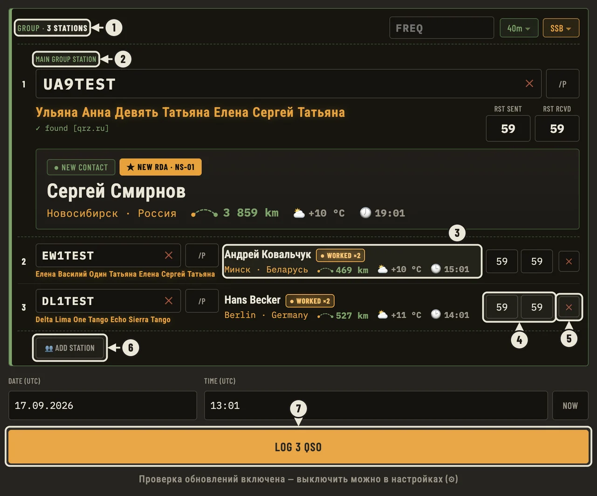
- GROUP · 3 STATIONS — вся группа в одной зелёной рамке; число — сколько в ней станций, вместе с основной. Частота, диапазон и вид излучения — здесь же: они общие для всех.
- MAIN GROUP STATION — основная станция, номер 1. У неё остаётся большая карточка.
- Одна строка на станцию: позывной (под ним расшифровка; ищется в базе, пока набираете), имя и отметка NEW или WORKED ×2 — щелчок по ней открывает прошлые связи, — дальше город, расстояние, погода и местное время. Для станции, которой нет в базах, прямо в её строке появляются поля имени, QTH и RDA.
- У каждой станции свои рапорты.
- ✕ — убрать станцию (или Esc в её позывном).
- 👥 ADD STATION — добавить ещё одну в конец. Пробел в позывном станции группы — или в её рапортах — добавляет следующую прямо под ней.
- На кнопке видно, сколько связей запишется: основная станция и каждая станция группы, где есть позывной; пустые не считаются. После записи появится ✓ 3 QSO LOGGED.
Группу начинает 👥 рядом с позывным или Пробел в нём. Когда группа открыта, эта кнопка прячется — дальше станции добавляют Пробел и ADD STATION. Уберёте последнюю станцию группы — рамка снова станет оранжевой, MAIN STATION.
Пробел, 👥 и ADD STATION добавляют станцию, только когда позывной уже набран — в пустом поле ничего не происходит, — и никогда не делают вторую пустую станцию: если одна ещё ждёт позывного, курсор просто переходит в неё.
7. Режим контеста
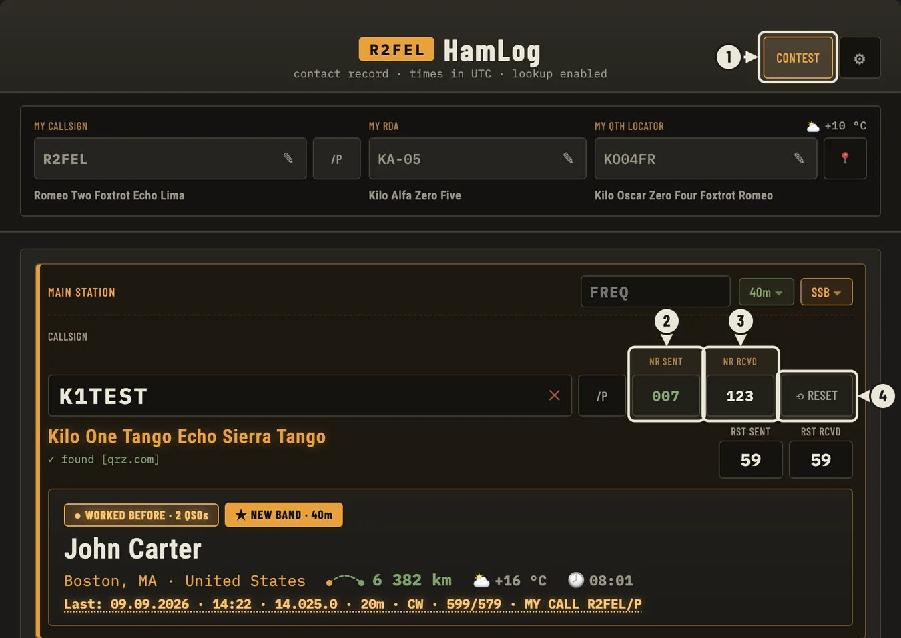
- CONTEST — включает и выключает режим контеста (пока включён, кнопка подсвечена). Запоминается.
- Переданный номер — 001, 002, 003… Сам прибавляется после каждой связи. Можно вписать другой — счёт пойдёт от него.
- Принятый номер — тот, что дали вам.
- ⟲ RESET — снова 001, к следующему контесту. Программа сначала спросит (посреди контеста случайное нажатие сбило бы нумерацию); у уже записанных связей номера не меняются.
Ритм такой: позывной → Tab → его номер → Enter. В режиме контеста запись группы выключена — станции по одной. Счёт номеров сохраняется и после выхода из программы, так что контест можно вести два вечера.
Отчёт организатору — Cabrillo
После контеста свой журнал отправляют организатору. Почти все принимают только один вид файла — Cabrillo. Это не ADIF: обычный текстовый файл, где сначала идёт «шапка» — кто участвовал и в каком зачёте, — а потом по одной строке на каждую связь, всегда в одном и том же порядке.
START-OF-LOG: 3.0 CONTEST: RUSSIAN-DX CALLSIGN: R2FEL CATEGORY-OPERATOR: SINGLE-OP CATEGORY-POWER: LOW CATEGORY-BAND: 40M CATEGORY-MODE: SSB GRID-LOCATOR: KO04FR NAME: Aleksei QSO: 7040 PH 2026-09-05 1432 R2FEL 59 001 UA3ABC 59 045 QSO: 7045 PH 2026-09-05 1435 R2FEL 59 002 DL1XYZ 59 112 END-OF-LOG:
В строке QSO: по порядку: частота в килогерцах, вид излучения
(PH — телефон, CW, FM), дата, время UTC,
ваш позывной, ваш рапорт и переданный номер, позывной
корреспондента, его рапорт и принятый номер. Ровно то, что
режим контеста и записывает.
Делается так: ⚙ → Экспорт ADIF › → В КАКОМ ВИДЕ
→ Cabrillo — отчёт о контесте. Появятся четыре поля: название
контеста (как его пишет организатор — CQ-WW-SSB, RUSSIAN-DX;
распространённые предлагаются списком), один оператор или несколько, мощность и ваше
имя. Позывной, локатор и город берутся из ваших настроек, диапазон и вид излучения —
из самих связей. Выше выберите За период — дни контеста, —
и кнопка ОТЧЁТ CABRILLO сохранит файл .log.
Его и отправляют: почтой или через форму на сайте организатора.
Программа записывает обычный обмен: рапорт и номер. В некоторых контестах передают другое — зону CQ, область, номер района RDA. Тогда откройте файл в «Текстовом редакторе» (это простой текст) и впишите нужное в те же столбцы вместо номеров, а перед отправкой сверьтесь с положением о контесте — что именно и в каком зачёте ждёт организатор.
8. Журнал
Журнал под формой, свёрнут, чтобы не мешать. ▸ LOG открывает и закрывает его; сам он открывается для повторной станции.
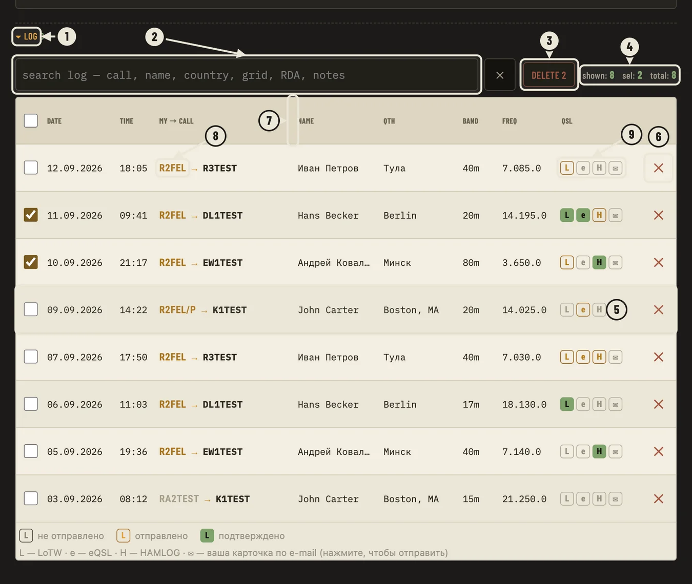
- ▾ LOG — открыть / закрыть журнал.
- Поиск — по позывному, имени, стране, локатору, RDA, QTH, диапазону, виду излучения, частоте или заметкам. ✕ очищает его.
- DELETE 2 — удалить отмеченные связи (программа переспросит).
- Счётчики: показано (shown), отмечено (sel), всего (total).
- Щёлкните по связи — она откроется в форме для исправления (см. ниже). Флажок в начале строки отмечает её, флажок в заголовке — все показанные. Shift+щелчок отмечает сразу диапазон строк.
- ✕ — удалить эту одну связь (программа переспросит).
- Границы столбцов можно тянуть мышью — шире или уже. Двойной щелчок по любой границе возвращает всё как было.
- MY → CALL — кто кому: ваш позывной янтарным, стрелка, позывной корреспондента. Ваш прежний позывной — серым; с «/P», «/M», «/QRP» — это тот же текущий, он тоже янтарный. Серый «?» — ваш позывной у связи не записан (например, связи пришли из файла, где его нет); укажите его в «Мой позывной у связей». На телефоне видно только позывного корреспондента.
- QSL — подтверждения: L — LoTW, e — eQSL, H — HAMLOG, ✉ — ваша карточка по e-mail (нажмите на него, чтобы отправить; подробнее). Серая рамка — не отправлено, янтарная — отправлено, зелёная — подтверждено. Наведите мышь — будут даты. Зелёная e открывает полученную карточку eQSL. Как отправлять и проверять — в разделе «Подтверждения QSL».
Исправить записанную связь
Пока открыта старая связь, в строке станции показан тот позывной, под которым она была проведена — у многих в журнале есть связи под прежним позывным. Как только правка закончена (сохранили или отменили), в строке снова ваш сегодняшний позывной: следующая связь запишется под ним.
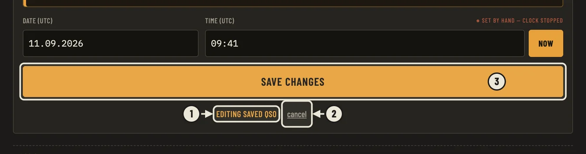
- EDITING SAVED QSO — в форме связь из журнала, а не новая. В верхней строке — станция, от имени которой она была записана.
- cancel — оставить как было.
- SAVE CHANGES (или Enter) — сохранить исправления. Станции группы, добавленные во время исправления, запишутся как новые связи.
Отметки QSL у исправленной связи сохраняются. Но если поменять позывной, дату, время, диапазон или вид излучения уже отправленной связи, для LoTW, eQSL и HAMLOG это другая связь — она снова встанет в очередь на отправку.
Когда с последнего полного экспорта набирается 15 связей, над журналом появляется напоминание сделать копию, а ⚙ подсвечивается. Экспорт всего журнала (раздел 9) его снимает.
9. Настройки
⚙ справа вверху. Настройки собраны в группы. Переключатель включает и выключает; строка со стрелкой › открывает свою страницу, назад — ‹ Настройки или Esc. Закрыть всё — ✕ в правом верхнем углу (он есть на каждой странице) или Esc на списке. Щелчок мимо окна ничего не закрывает — чтобы случайно не потерять набранное. Внизу каждой страницы есть ссылка 📖: она открывает эту инструкцию сразу на нужном месте.
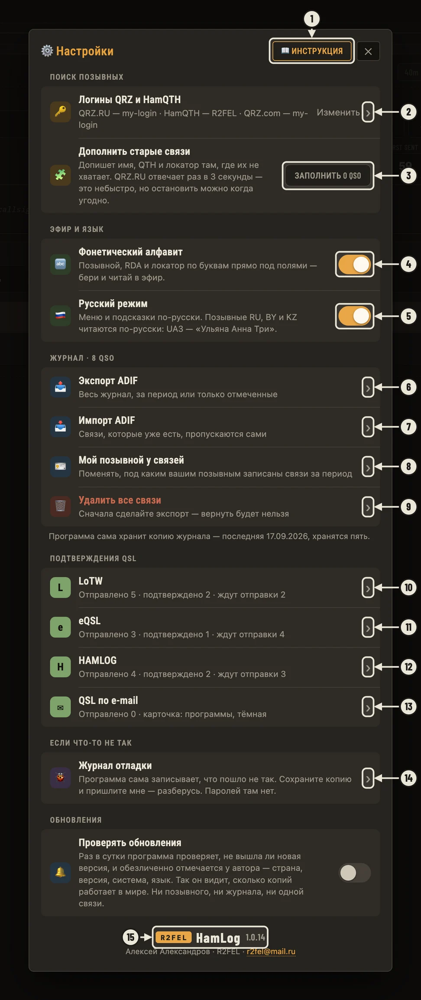
- 📖 ИНСТРУКЦИЯ — эта инструкция (ещё F1 или меню Help вверху экрана).
- Логины QRZ и HamQTH — под названием видно, какие логины QRZ.RU, HamQTH и QRZ.com заданы; щелчок по строке — изменить.
- ЗАПОЛНИТЬ … QSO — проходит по связям, где не хватает имени, страны или QTH, и дописывает их из справочников. QRZ.RU разрешает один запрос в три секунды, поэтому большой журнал заполняется не быстро; СТОП — остановить, уже заполненное сохранится. В конце сказано, что вышло: Дополнено 10 · 3 нет в справочниках · у 5 добавить нечего — «нет в справочниках» значит, что позывного не знает ни один из них, а «добавить нечего» — что позывной нашёлся, но нового в нём не оказалось.
Локатор в этот счёт не входит. За границей его чаще всего нет ни у кого: у QRZ.RU для иностранных записей нет самого поля, QRZ.com без платной подписки отдаёт адрес, но не координаты, а HamQTH знает только тех, кто там зарегистрировался. Программа пытается вычислить локатор по городу, и обычно это удаётся; если нет — связь всё равно считается заполненной, лишь бы имя, страна и город были на месте. - Фонетический алфавит — подсказки по буквам под полями. Выключено — все такие строки в программе скрыты.
- Русский режим — см. раздел 11.
- Экспорт ADIF › — сохранить журнал в файл (страница ниже).
- Импорт ADIF › — добавить связи из файла ADIF (страница ниже).
- Мой позывной у связей › — поменять, под каким вашим позывным записаны связи за период (ниже).
- Удалить все связи › — очистить журнал на этом компьютере. На странице сначала предлагается экспорт, потом красная кнопка — и программа ещё раз переспросит.
- LoTW › — отправка связей в LoTW и проверка подтверждений («Подтверждения QSL»). Под названием — сколько отправлено, подтверждено и ждёт отправки.
- eQSL › — то же для eQSL.
- HAMLOG › — то же для hamlog.online, через файлы.
- QSL по e-mail › — ваша карточка, почта для отправки и текст письма (ниже).
- Журнал отладки › — программа записывает в файл на этом компьютере всё, что делает, и все ошибки. СОХРАНИТЬ… кладёт копию на рабочий стол — её и присылать автору; ПОКАЗАТЬ открывает папку с ним. Паролей в нём нет. (Только в настольной программе.)
- Версия, автор и куда писать отзывы и идеи.
Экспорт ADIF
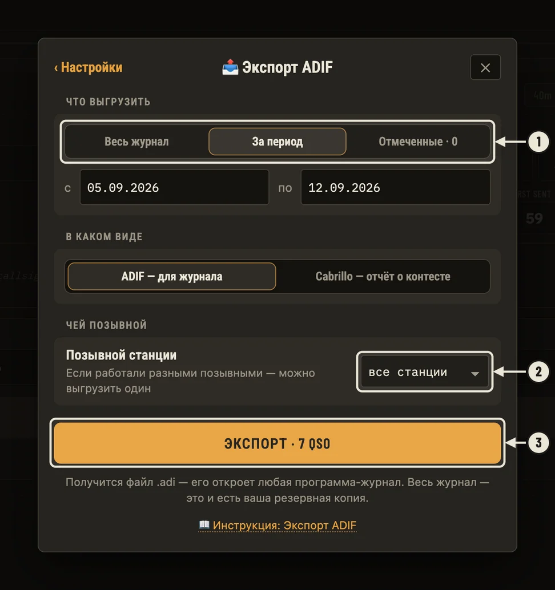
- Что сохранить: Весь журнал, За период (появятся две даты) или Отмеченные — связи, отмеченные галочками в журнале.
- Все ваши позывные или только один — если вы работали разными.
- В КАКОМ ВИДЕ: ADIF — обычный файл журнала, его читают все программы и принимают LoTW, eQSL, HAMLOG и QRZ.com. Cabrillo — отчёт для организатора контеста; что это такое и как заполнять — в разделе 7.
- Кнопка сразу показывает, сколько связей попадёт в файл. Программа спросит, куда сохранить, а потом покажет, что файл сохранён и где он; ПОКАЗАТЬ ФАЙЛ откроет его папку. Файл ADIF читает любая программа-журнал — весь журнал в нём и есть ваша резервная копия.
Импорт ADIF
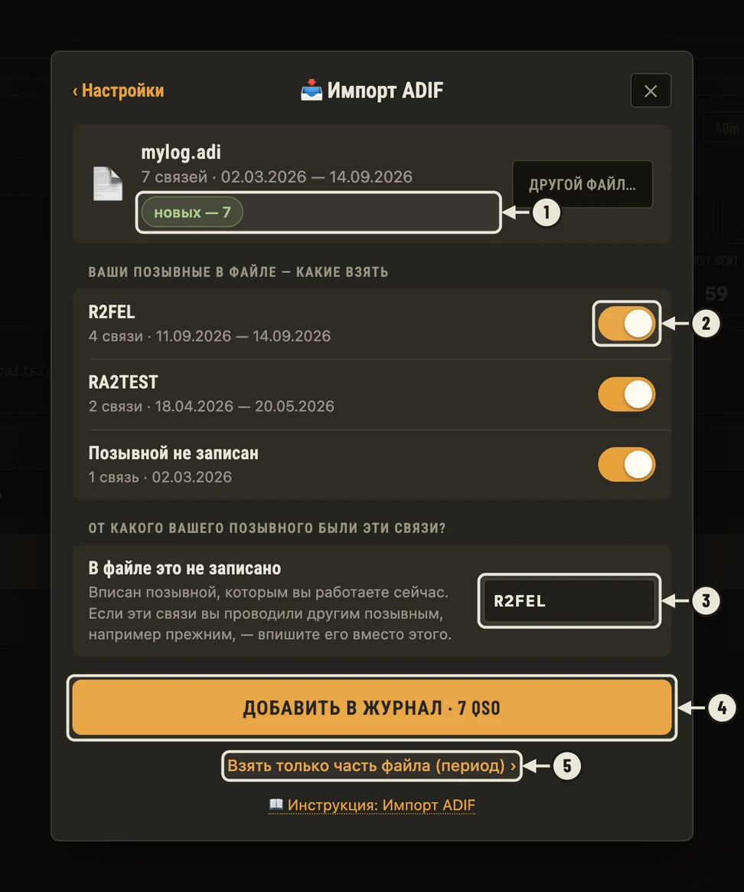
ВЫБРАТЬ ФАЙЛ… — и программа сначала показывает, что в файле, а связи добавит только по кнопке. Вопросы — только там, где без них не обойтись:
- Сколько в файле связей и за какие даты — и главное, сколько из них новых, а сколько уже есть в журнале (их программа не повторит, а если в файле о них больше сведений — допишет).
- Если в файле несколько ваших позывных — какие из них взять. Позывной один — этого списка нет.
- Если в файле не записано, от какого вашего позывного были связи, программа спросит. Вписан позывной, которым вы работаете сейчас; если связи были от другого, например прежнего, впишите его.
- Кнопка говорит, что будет: «ДОБАВИТЬ 7 СВЯЗЕЙ В ЖУРНАЛ».
- Нужна только часть файла — эта ссылка покажет две даты.
Связи, которые уже есть в журнале (тот же позывной, дата, время и диапазон), пропускаются, а не дублируются; недостающие сведения в них берутся из файла, более полный текст заменяет обрезанный. Файл, где часть полей в одной кодировке, а часть в другой (так бывает с файлами из HAMLOG), читается правильно, а «кракозябры» от прежних импортов программа исправляет сама.
Готово — или не получилось
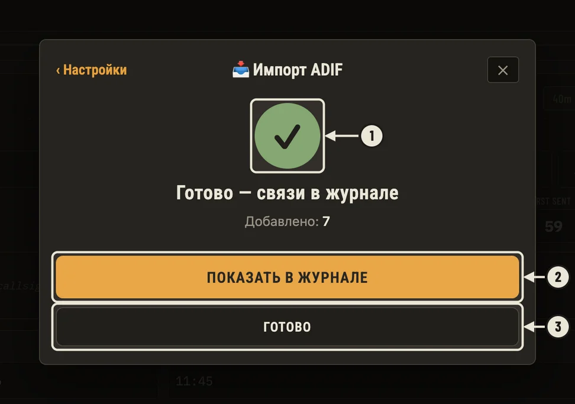
Каждое действие в настройках — импорт, экспорт, отправка и проверка LoTW, eQSL, HAMLOG, смена позывного у связей, удаление журнала — заканчивается такой страницей:
- Зелёная галочка — получилось, красный крестик — нет. Ниже — что именно сделано или почему не вышло.
- Куда дальше: после импорта — ПОКАЗАТЬ В ЖУРНАЛЕ, после экспорта — ПОКАЗАТЬ ФАЙЛ, если служба не приняла логин — ИЗМЕНИТЬ ЛОГИН.
- ГОТОВО — вернуться (после ошибки — НАЗАД).
О мелочах вроде сохранённого логина программа говорит короткой зелёной плашкой внизу окна — она исчезает сама.
Мой позывной у связей
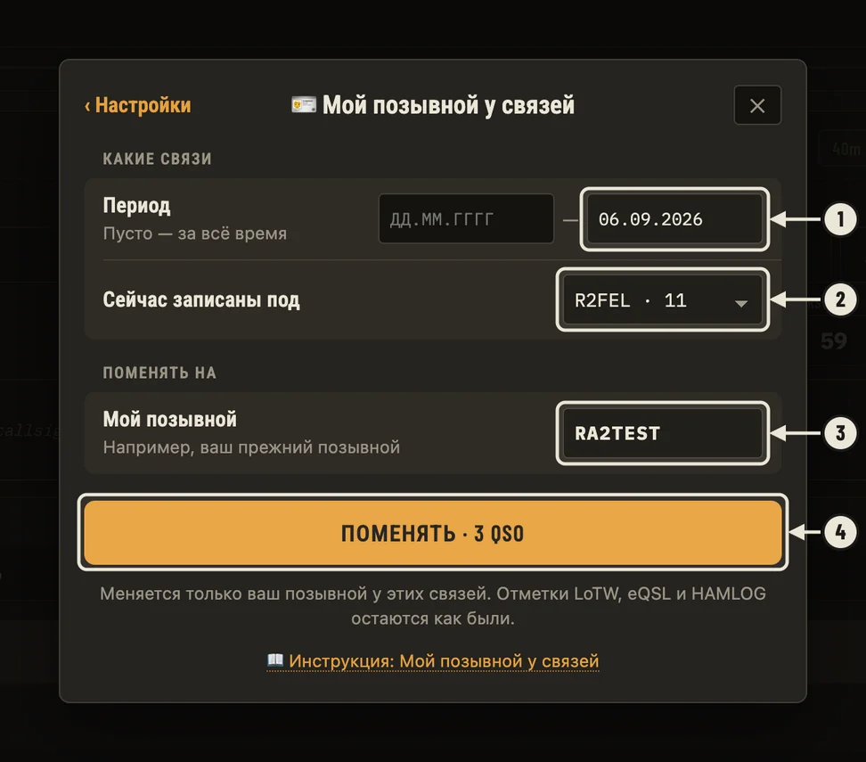
Если журнал пришёл из другой программы и в нём все связи стоят под одним позывным, хотя часть проведена под прежним, — здесь это исправляется разом:
- Период. Пусто — за всё время.
- Под каким позывным эти связи записаны сейчас. «(не указан)» — связи, у которых ваш позывной не записан («?» в журнале).
- На какой поменять.
- На кнопке — сколько связей изменится.
Меняется только ваш позывной у связей; отметки LoTW, eQSL и HAMLOG остаются.
Логины QRZ и HamQTH
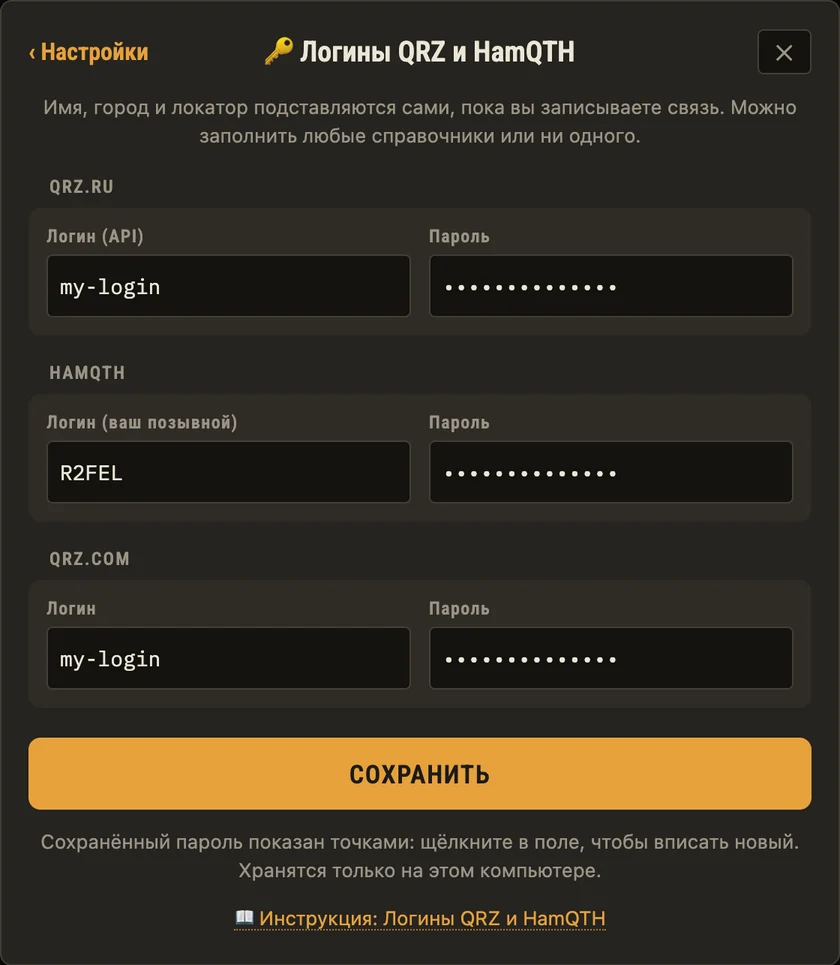
- QRZ.RU — главный: лучше всех знает российские станции, с именами по-русски и RDA.
- HamQTH — бесплатный справочник (нужен только бесплатный аккаунт). Спрашивается одновременно с QRZ.RU, так что ждать дольше не приходится, и дописывает то, чего у QRZ.RU нет: локатор, город, имя у иностранных станций. Там же бывает e-mail станции. В строке под позывным видно, откуда данные:
found [qrz.ru + hamqth]. - QRZ.com — третий: дописывает то, чего не нашлось ни у QRZ.RU, ни у HamQTH (а если оба не знают позывного — даёт всё, что у него есть). Без подписки у него немного — имя, город, страна, иногда локатор. Спрашивается, только когда чего-то не хватает.
- Старшинство такое: QRZ.RU → HamQTH → QRZ.com. Если одно и то же имя в другом источнике записано полнее («Иван» и «Иван Петров»), берётся полное.
- Можно заполнить любые или ни одного. Логины хранятся только на этом компьютере и используются только для поиска. Сохранённый пароль показан точками (сам пароль программа не показывает). Чтобы сменить — щёлкните в поле и впишите новый; ничего не вписали — остаётся прежний. Так же в окнах логина LoTW и eQSL.
Проверка обновлений
Раз в сутки при запуске программа тихо проверяет, не вышла ли версия новее. Если вышла — внизу настроек появляется строка Вышла версия 1.0.14, а на кнопке ⚙ — маленькая янтарная точка. Щелчок по строке открывает страницу, откуда программу можно скачать. Сама себя программа не обновляет — вы скачиваете новую и ставите её поверх старой; журнал и настройки лежат отдельно и не трогаются.
Тем же запросом программа обезличенно отмечается у автора — так он видит, сколько копий работает в мире и в каких странах. Уходит ровно четыре вещи:
- случайный номер, который программа придумала себе при первом запуске (он нужен только чтобы отличить один компьютер от другого);
- версия программы;
- система — Mac или Windows;
- язык — русский режим включён или нет.
Страна определяется по сети на стороне сайта, и сам сетевой адрес не сохраняется. Ни позывного, ни журнала, ни одной связи, ни логинов, ни паролей не уходит никуда и никогда.
Проверка включена сразу — при первом запуске программа пишет об этом строкой под формой. Выключить можно когда угодно: ⚙ → ОБНОВЛЕНИЯ → Проверять обновления. Выключено — программа не ходит в интернет за этим вовсе и про обновления молчит.
10. Подтверждения QSL: LoTW, eQSL, HAMLOG, e-mail
Отправка и проверка — всегда кнопками, когда вы решите. Уходят связи вашего текущего позывного — вместе с «/P», «/M», «/QRP», под основным позывным, как принято. Связи под прежними вашими позывными остаются в журнале и никуда не отправляются.
Связь без диапазона (не указаны ни частота, ни диапазон) не примет ни одна служба. Такие связи программа называет под кнопкой отправки — щёлкните по связи в журнале и впишите частоту или диапазон. Так же не уходят связи, у которых не записан ваш позывной («?» в журнале), — иначе они ушли бы не под тем позывным. Если отправлять нечего, там же написано, что всё уже отправлено.
LoTW
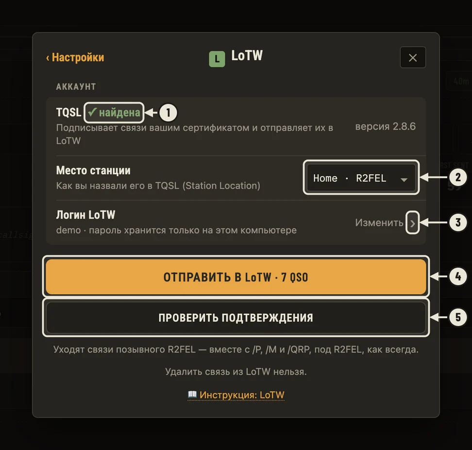
- TQSL — бесплатная программа ARRL, которая подписывает связи вашим сертификатом. Она должна быть установлена и настроена (сертификат и «место станции»); программа находит её сама.
- Место станции — из заведённых в TQSL (Station Location). Отправляются связи с его позывным.
- Логин LoTW — логин и пароль сайта lotw.arrl.org (не сертификата). Нужны, чтобы проверять подтверждения; хранятся только на этом компьютере.
- ОТПРАВИТЬ В LoTW — TQSL подписывает и отправляет связи, которых в LoTW ещё нет; на кнопке — сколько. Связи, которые TQSL уже отправляла, она пропустит сама.
- ПРОВЕРИТЬ ПОДТВЕРЖДЕНИЯ — программа спрашивает у LoTW, какие ваши связи там уже есть (их можно было отправить и из другой программы) и какие подтверждены, и ставит отметки L. В следующий раз спрашивает только новое.
- Сертификат подписывает связи только за свой период. Если часть связей в него не попадает, программа скажет, сколько их и какой период у сертификата, — и в число на кнопке они не входят.
- Удалить связь из LoTW нельзя. Исправленная после отправки связь снова встанет в очередь, старая в LoTW тоже останется.
- Отправка работает только в настольной программе и только на этом компьютере — не с телефона.
eQSL
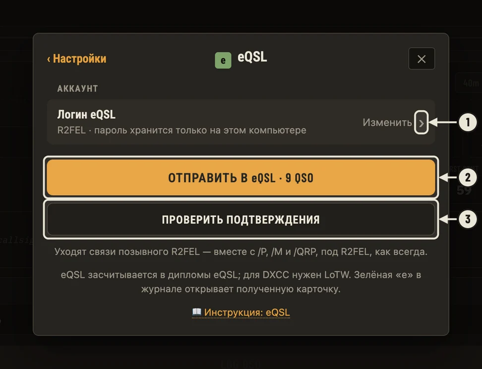
- Логин eQSL — позывной и пароль от eqsl.cc; если в eQSL у вас несколько мест (QTH), ещё QTH Nickname. Хранятся только на этом компьютере.
- ОТПРАВИТЬ В eQSL — отправляет связи, которые туда ещё не уходили. Связи, которые уже есть в eQSL, он отклонит как повторы — программа покажет «уже были там» и отметит их отправленными. Если eQSL какую-то связь не принял, программа назовёт её.
- ПРОВЕРИТЬ ПОДТВЕРЖДЕНИЯ — забирает пришедшие карточки, ставит отметки e и сразу качает сами картинки карточек. Кнопка называется одинаково у LoTW, eQSL и HAMLOG — это всегда «сходи и посмотри, что подтвердилось».
Саму картинку полученной карточки видно прямо из журнала: нажмите на зелёную e у связи. Кликать по каждой не нужно — картинки подтягиваются сами после проверки подтверждений. eQSL отдаёт по одной карточке раз в 11 секунд (это его правило, не наше), поэтому три десятка карточек качаются минут пять. Идёт это в фоне: настройки можно закрыть и работать дальше. На странице eQSL видно, сколько уже готово — Картинки карточек: 4 из 27, — а сама кнопка на это время становится ОСТАНОВИТЬ. Прервалось (закрыли программу) — остальное доберётся при следующем нажатии той же кнопки; сама программа в eQSL без вашего нажатия не ходит. Скачанное хранится на этом компьютере и дальше открывается мгновенно, его можно сохранить в файл. Если у eQSL картинки на связь нет (у корреспондента записано другое время или вид излучения), программа это запомнит и не будет спрашивать снова до следующей проверки.
eQSL засчитывается в дипломы eQSL; для DXCC нужен LoTW.
HAMLOG
hamlog.online пока не принимает связи от программ напрямую, поэтому и туда, и обратно — файлом. На сайте оба действия — в разделе «Мои позывные»: выберите свой позывной, там есть «Загрузить ADIF» и «Скачать ADIF».
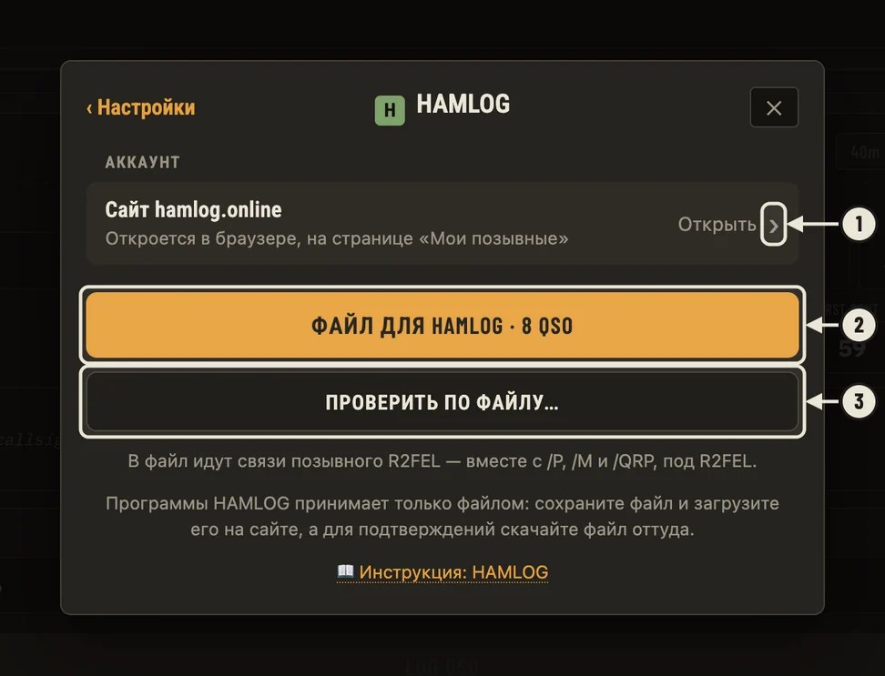
- Сайт hamlog.online — открывает его в браузере, сразу на странице «Мои позывные».
- ФАЙЛ ДЛЯ HAMLOG — сохраняет в файл связи, которых на HAMLOG ещё нет (на кнопке — сколько), и отмечает их отправленными. Этот файл загрузите на сайте через «Загрузить ADIF». Если окно сохранения закрыть, ничего не отметится.
- ПРОВЕРИТЬ ПО ФАЙЛУ… — выберите файл, скачанный с сайта через «Скачать ADIF». Программа отметит связи, которые есть на HAMLOG, и те, что подтверждены HQSL, — отметками H. Новых связей из этого файла не добавляется; если на HAMLOG есть связи, которых нет в журнале, программа скажет, сколько их, — добавить их можно через «Импорт ADIF».
Своя QSL-карточка по e-mail
Программа может отправить корреспонденту вашу QSL-карточку письмом — с данными связи, впечатанными прямо в карточку. Только вручную: по одной, когда вы решите. Письмо уходит с вашей почты.
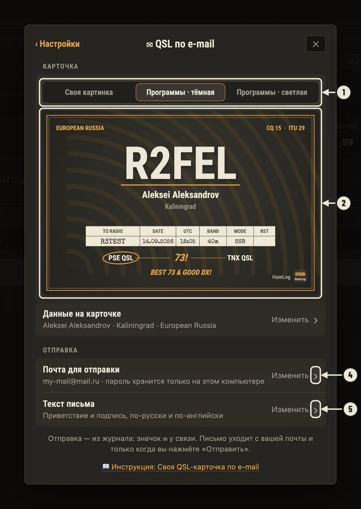
- Какая карточка: Своя картинка — ваш собственный дизайн, данные встают в места, размеченные для него; Программы · тёмная или · светлая — карточку рисует сама программа из ваших данных, с маленьким значком программы в углу.
- Как карточка будет выглядеть — на вашей настоящей связи. Позывной корреспондента, дата, время UTC, диапазон, вид излучения и рапорт вписываются «пишущей машинкой»; кружком обведено TNX QSL, если его подтверждение уже пришло (LoTW, eQSL или HAMLOG), иначе PSE QSL. RDA и локатор — те, что записаны у связи.
- Для карточки программы — ваше имя, город, страна и зоны. ВЗЯТЬ ИЗ СПРАВОЧНИКОВ заполнит их по вашему позывному.
- Почта для отправки — адрес и пароль приложения (не обычный пароль от почты: почтовые службы выдают программам отдельный). Для Mail.ru: Настройки → Безопасность → Пароли для внешних приложений → Добавить, отметьте «Отправка писем (SMTP)». Для Яндекса, Gmail и других подсказка появится сама, когда впишете адрес. ПРОВЕРИТЬ ВХОД В ПОЧТУ — войдёт в почту, ничего не отправляя.
- Текст письма — ваше имя для подписи, тема и приветствие по-русски (для RU, BY, KZ) и по-английски (для остальных). Имя корреспондента, его позывной, дата, диапазон и ваша подпись подставляются сами.
Своя картинка: ВЫБРАТЬ… — и программа сохранит её у себя. Дальше нужно один раз показать, где на ней что печатать: кнопка РАЗМЕТИТЬ… рядом. Пока разметки нет, уходит карточка программы.
Разметка своей карточки
Окно разметки показывает вашу карточку такой, какой она уйдёт: это не набросок, а та же самая отрисовка, что и в письме, просто поверх неё нарисованы рамки. Порядок такой:
- Наверху — список полей: позывной, дата и время, диапазон, вид излучения, рапорт, ваш RDA, ваш локатор и два кружка — PSE QSL и TNX QSL. Нажмите на поле, которое ставите (оно станет янтарным).
- Обведите на карточке место для него — просто протяните мышью прямоугольник. Внутри сразу появится настоящий текст, так что видно, влезает он или нет.
- Не туда попали — потяните за готовую рамку, она подвинется. УБРАТЬ ПОЛЕ убирает выбранное, НАЧАТЬ ЗАНОВО — все.
- Размер букв программа берёт из высоты рамки: хотите крупнее — обведите повыше. Если текст в ширину не влезает, он сам ужмётся.
- Светлые надписи / Тёмные надписи — это про ваш RDA и локатор: на тёмной фотографии их пишут белым с тенью, на светлой карточке — тёмным. Позывной, дата и остальное из таблицы всегда печатаются тёмным, «под пишущую машинку».
- Сохранить разметку. Ставить все девять полей не обязательно — что не разметили, того на карточке и не будет.
Разметка привязана к самой картинке (программа узнаёт её по отпечатку файла), так что можно держать несколько карточек и переключаться между ними — разметка каждой сохранится.
Карточка помнит, чья она. Размечая картинку, программа запоминает позывной, который
в этот момент стоит в MY CALLSIGN — ведь он и напечатан на самой карточке.
Если вы потом смените позывной, для связей под новым уйдёт карточка программы, а не
ваша картинка со старым позывным; в окне отправки будет прямо сказано, почему. Завели карточку с новым
позывным — выберите её и разметьте, и всё встанет на место. Суффиксы /P, /M
и подобные позывным не считаются — для них карточка остаётся вашей.
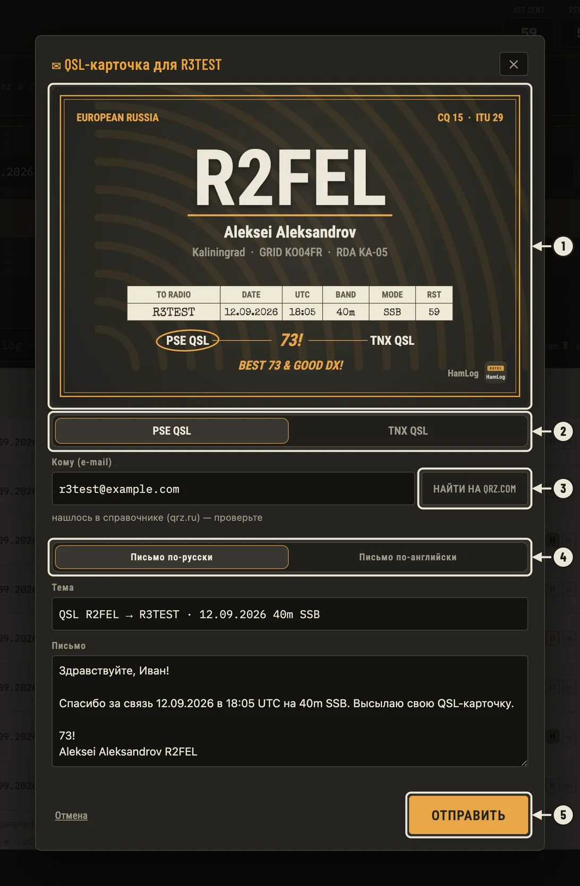
Карточка уходит размером 1050 точек по длинной стороне — это привычные для QSL 140×90 мм при печати, и письмо весит около трети мегабайта. Имя корреспондента в письме пишется на языке письма: в русском — по-русски, в английском — латиницей.
Отправка — из журнала: значок ✉ в колонке QSL у связи.
- Карточка — ровно такая, какая уйдёт.
- PSE QSL или TNX QSL — что обвести кружком.
- Адрес корреспондента. Программа подставит его сама, если он был у этой связи или прежних, или найдётся в справочнике HamQTH; иначе НАЙТИ НА QRZ.COM откроет его страницу — скопируйте адрес оттуда. Вписанный адрес программа запомнит для этого позывного.
- Письмо по-русски или по-английски. По умолчанию — по-английски; по-русски выбирается само, только если включён русский режим и позывной российский, белорусский или казахстанский. Переключить можно здесь же, как и поправить тему и текст.
- ОТПРАВИТЬ — письмо с карточкой уходит; значок ✉ у связи становится янтарным, при наведении — дата и адрес. Отправить ещё раз можно.
11. Русский режим
Переключатель Русский режим в настройках меняет сразу несколько вещей:
-
Позывные России, Беларуси и Казахстана расписываются русским
фонетическим алфавитом —
UA3XQVзвучит «Ульяна Анна Три Знак Щука Жук», — и ваши позывной, RDA и локатор, пока вы работаете с такой станцией, идут тем же алфавитом. Остальные страны — по NATO. - Имена и города этих станций показываются по-русски.
- Имя и QTH, которые вы вписываете для станции, которой нет в базах, всегда пишутся по-русски — из какой бы страны она ни была («John» пишется «Джон»), даже если раскладка английская.
- Настройки, окна, которые из них открываются, и подсказки про 📍 и резервную копию — на русском. И эта инструкция тоже.
- Дата и время —
14.09.2026и17:25, 24 часа, как бы ни был настроен компьютер.
Если режим выключен, кириллица в журнал не попадает: имена и города с QRZ.RU пишутся латиницей (Тула → Tula). Подписи самой формы — CALLSIGN, LOG QSO — в обоих режимах остаются английскими.
12. Горячие клавиши
| Клавиша | Где | Что делает |
|---|---|---|
| Enter | Позывной, позывной группы, рапорты, номер, частота | Записывает связь — вместе со всеми станциями группы. |
| Tab | Позывной и дальше | Следующее поле этой связи: (принятый номер) → (имя, QTH, если станция не найдена) → ваш рапорт → его рапорт. На последнем останавливается. |
| Shift+Tab | Те же поля | Назад по той же цепочке. |
| Пробел | Позывной или рапорты — основной станции или станции группы | Добавляет следующую станцию пайлапа (не в режиме контеста и не пока позывной этой станции пуст). То есть: позывной, Tab, рапорт, Пробел, следующий позывной… |
| Esc | В станции группы | Убирает эту станцию. |
| Esc | В остальной форме | Стирает позывной и всё, что по нему найдено; часы снова идут. |
| Esc | Открыто меню или окно | Закрывает его — настройки, список, эту инструкцию — и больше ничего. |
| F1 | Где угодно | Открывает эту инструкцию. |
| F11 | Где угодно | Во весь экран и обратно. |
| ⌃⌘F | Где угодно | Во весь экран и обратно. |
| Shift+щелчок | Флажок в журнале | Отмечает (или снимает) все связи между этой и последней, по которой щёлкнули. |
| Двойной щелчок | Граница столбца в заголовке журнала | Возвращает всем столбцам обычную ширину. |
| Правая кнопка мыши | Любое поле | Обычное меню: копировать, вставить, вырезать, выделить всё. В поле пароля — только «вставить» (пароль из программы не копируется). |
| ⌘ C / V / X / Z / A | Любое поле | Копировать, вставить, вырезать, отменить, выделить всё. |
| ⌘ M / H | Где угодно | Свернуть окно / скрыть программу. |
| ⌘ W | Где угодно | Закрывает окно; программа остаётся в Dock — щёлкните по значку, чтобы вернуть окно. |
| ⌘ Q | Где угодно | Выход. Всё уже сохранено. |
| Ctrl C / V / X / Z / A | Любое поле | Копировать, вставить, вырезать, отменить, выделить всё. |
| Alt+F4 | Где угодно | Закрывает программу. Всё уже сохранено. |
| Win+↓ | Где угодно | Свернуть окно. |
Полям позывного, RDA и локатора раскладка не важна — переключаться на английскую, чтобы набрать позывной, не нужно.
13. Резервная копия и перенос на другой компьютер
- Каждая связь сохраняется в момент записи — «сохранить» забыть невозможно. Журнал хранится внутри программы на этом компьютере.
- Программа сама делает копию. Раз в день при первом запуске (а ещё — сразу после импорта и после каждых двадцати новых связей) весь журнал записывается в файл
.adiв её собственной папке; хранятся последние пять, старые удаляются сами. Включать ничего не нужно, спрашивать ничего не будет — в настройках под группой «ЖУРНАЛ» написано, когда сделана последняя копия. Это страховка на случай, если журнал внутри программы пропадёт (переустановка, сбой): тогда берёте последний файл и делаете импорт. - Но своя копия всё равно нужна. Автоматическая лежит на этом же компьютере — вместе с ним она и пропадёт. Настоящая резервная копия — это файл, который вы сохранили куда-то ещё:
- Копия: настройки ⚙ → Экспорт ADIF › → Весь журнал → ЭКСПОРТ. Храните файл
.adiв надёжном месте (iCloud Drive, флешка). - Другой компьютер — Mac или Windows: установите там программу, затем настройки → Импорт ADIF › → ВЫБРАТЬ ФАЙЛ…, выберите сохранённый файл — и кнопку внизу, на ней написано, сколько связей добавится: ДОБАВИТЬ В ЖУРНАЛ · 128 QSO.
- Этот же файл открывает любая другая программа-журнал, и его же загружают в LoTW, eQSL и журнал QRZ.com.
14. Удаление программы
Если просто перетащить программу в Корзину, журнал и настройки останутся на Mac. Чтобы удалить всё:
- В строке меню вверху экрана: R2FEL-LOG → Uninstall R2FEL HamLog…
- Программа скажет, сколько у вас связей, и предложит Export ADIF First… — сначала сохранить их в файл. Сделайте это, если журнал нужен.
- Uninstall: программа, журнал, логин QRZ и все настройки уходят в Корзину, программа закрывается.
Пока Корзина не очищена, всё можно вытащить обратно.
- Windows 10 и 11: Параметры → Приложения → Установленные приложения, найдите R2FEL-LOG, ⋯ → Удалить. Windows 7 и 8: Панель управления → Программы и компоненты, R2FEL-LOG, Удалить.
- Программа удаления спросит, удалить ли также журнал, логин QRZ и настройки. Нет (по умолчанию) — оставить: если потом установить программу снова, всё будет на месте. Да — отправить их в Корзину. Если связи нужны, сначала сделайте экспорт ADIF.
Пока Корзина не очищена, папку с журналом можно из неё восстановить.
15. Если что-то не работает
Ничего не находится / «lookup off»
Проверьте логины в настройках (строка Логины QRZ и HamQTH) и интернет. Позывной, которого нет ни в одной базе, просто not found — впишите данные вручную.
В карточке нет расстояния и погоды
Заполните MY QTH LOCATOR (или нажмите 📍). Если в записи самой станции нет локатора, карточка так и скажет — считать не от чего.
📍 выдаёт ошибку
См. раздел 4: определение местоположения должно быть включено на компьютере и разрешено для R2FEL-LOG.
Что-то ещё пошло не так — журнал отладки
Что бы ни случилось — ошибка, вылет, пустое окно, — программа это записала.
Откройте настройки ⚙ → Журнал отладки › → СОХРАНИТЬ…
и пришлите файл с рабочего стола на
r2fel@mail.ru, добавив пару слов о том, что
вы делали. Сам файл лежит здесь:
~/Library/Logs/R2FEL-LOG/r2fel-log.txt%APPDATA%\R2FEL-LOG\logs\r2fel-log.txt
— если программа даже не запускается, его можно взять оттуда вручную.
Время «не то»
Это UTC, а не местное время — так ведут все радиолюбительские журналы. Если горит SET BY HAND, часы стоят: нажмите NOW.
При первом запуске «не удаётся открыть»
См. раздел 1: Системные настройки → Конфиденциальность и безопасность → Всё равно открыть.
При установке «Система Windows защитила ваш компьютер»
См. раздел 1: Подробнее → Выполнить в любом случае.
Вместо некоторых значков квадратики (Windows 7)
В Windows 7 нет цветных символов, которые стоят на некоторых кнопках (⚙, 📍, 👥, 📖), поэтому они могут выглядеть блёкло или не показываться. Кнопки работают так же; в Windows 10 и 11 всё выглядит как на картинках здесь.